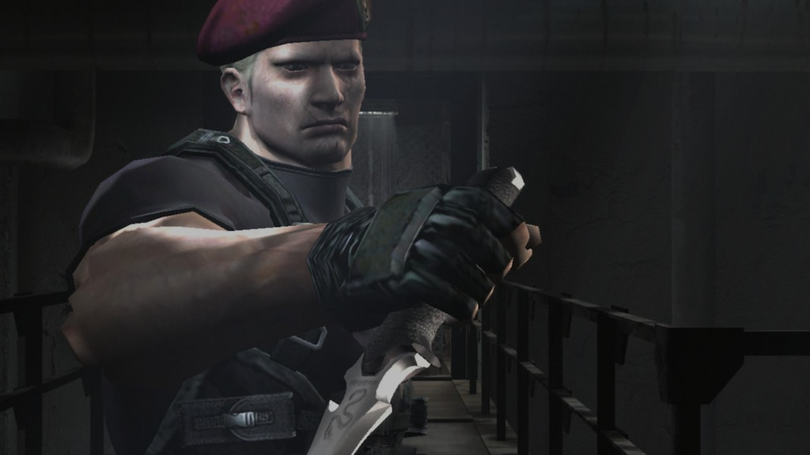

Fakta tentang Krauser : Teman Leon?
Rabu, 15 September 2020

Jack Krauser adalah antagonis sekunder Resident Evil 4 dan salah satu protagonis utama Resident Evil: The Darkside Chronicles. Dia adalah mantan anggota USSOCOM yang melayani bersama agen DSO Leon S. Kennedy dalam misi senjata anti-virus di Amerika Selatan. Memalsukan kematiannya segera setelah itu, ia akhirnya bekerja untuk Wesker dan nama kode SOCOM-nya adalah "Silverdax".
| Baca Juga : |
|---|
| 5 Perbedaan Resident Evil 2 Remake dengan Aslinya |
Keahlian Krauser :
- Roundhouse: A roundhouse to reverse roundhouse kick combo, sending the enemy flying away from him. Both kicks can also hit nearby enemies.
- Up-Slice: Krauser draws his knife and uppercuts the enemy with it. This is also the move he uses to destroy Time Bonuses.
- Tackle: Krauser performs a shoulder tackle that sends enemies flying away from him. Stinger: Krauser grabs their shoulders and knees from in the face. This move is also has a high critical headshot rate.
- Throat Slit: Krauser draws his knife and stabs the entire blade into the enemies throat, ripping it out.
- Knife Stab: Krauser draws his knife one-handed and impales the enemy's body. High critical if the knife hits in the head.
- Dropkick: Krauser jumps and kicks the enemy with both feet before landing on the stomach. This move takes a huge chunk out of health out of the target.
Source : www.fandom.com